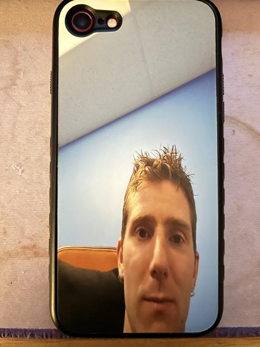

iOS 64-bit downgrade and hacktivation bonanza
Well, the activation bonanza part only applies to A11 devices. iOS 16's SEP will let you downgrade down to iOS 14.3, however you can't activate it.
This has always struck me as so close to running old versions of iOS yet so far... until now.
Procure the following tools:
The following devices are compatible:
A7-A10 (no hacktivation required)
- A7: iPhone 5s, iPad mini 2, iPad mini 3, iPad Air 1
- A8(X): iPhone 6, iPod Touch 6, iPad Air 2, ...
- A9(X): iPhone 6s, iPhone SE 2016, iPad 5, iPad Pro 1
- A10: iPhone 7, iPod Touch 7 (perhaps iPads too with iOS 16 activation records but these iPads get iOS 17)
- each iPhone's Plus counterpart
A11 (hacktivation stuff required)
iPhone X is not compatible.

Example picture of a compatible iOS device
Part 0: A11 Prep
Before we begin with the downgrade, if you have an A11 device we need to do a fresh restore of iOS to grab activation records.
Use iTunes for this, just do a regular DFU restore, I'll meet you at the setup screen.
Connect the iPhone to WiFi as usual. If you have an activation lock, enter your credentials to activate.
Once the activation screen goes away, DO NOT CONTINUE. Instead, connect the iPhone to your PC and boot it into DFU mode.
Open a terminal in the SSHRD_Script folder and type the following commands:
./sshrd.sh [iOS version]
./sshrd.sh boot
./sshrd.sh ssh
Replace [iOS version] with the actual version you restored to. Mismatching this WILL cause a boot-loop until you restore.
Wait inbetween the commands for the stuff on the device to be done.
This should SSH into the iPhone. Now, run mount_filesystems
Open your (S)FTP software of choice (I use FileZilla), connect to the device with the following parameters:
- Address: sftp://localhost
- Username: root
- Password: alpine
- Port: 2222
Download the following files/folders to a folder called "Activation" on your desktop (I shit you not this is necessary for the script to work):
- /mnt2/containers/Data/System/[random hex string]/Library/internal (enter each folder until you find it)
- /mnt2/containers/Data/System/[random hex string]/Library/activation_records (enter each folder until you find it)
- /mnt2/mobile/Library/FairPlay
- /mnt2/wireless/Library/Preferences/com.apple.commcenter.device_specific_nobackup.plist
Part 1: The downgrade
With all the PC software in hand, open the SSHRD_Script folder, navigate to Darwin or Linux depending on your OS (macOS is Darwin) and open a terminal.
Connect your device via USB to your computer and boot into DFU mode. (look this up for your device I'm not gonna hold your hand on this)
In the terminal, run ./gaster pwn
Open FutureRestore-GUI, select your FutureRestore binary, IPSW and SHSH blob, click Next.
Select the options "Pwned restore (--use-pwndfu)" and "Set ApNonce (--set-nonce)", click Next.
Now, simply click "Start FutureRestore". If all goes well, your device should be in recovery mode and you should have confirmation in the log that the ApNonce is set.
Go back to the options, deselect "Set ApNonce (--set-nonce)" and "Pwned restore (--use-pwndfu)", and click "Start FutureRestore" again. Now, the actual downgrading process begins.
If you have an A7-A10 device, congratulations. You have restored an older version of iOS and can use it right away. A11 users will have to do extra work with the activation records that were dumped.
Part 2: A11 hacktivation
There are 2 ways you can approach this, either a method that involves a jailbreak and a script or a jb-less, scriptless version just with SSH Ramdisk.
I will explain the scriptless version here. The reason you may need the scriptful version to begin with is due to possibly missing perms.
If you already tried activating, you probably noticed that Apple won't let you activate (you need to do this anyway to find the appropriate folders later). But this is where the fun part begins. The hacktivation begins by going back into DFU mode.
In the SSHRD_Script folder, run in terminal: ./sshrd.sh [iOS version], ./sshrd.sh boot, ./sshrd.sh ssh, mount_filesystems
You can probably imagine what you have to do in FileZilla at this point: put the files/folders back on the phone in the appropriate locations.
As a reminder that's: activation_record.plist going into the "activation_records" folder, data_ark.plist going into the "internal" folder, IC-Info.sisv going into the FairPlay/iTunes_Control/iTunes folder, the commcenter_devicespecific_nobackup.plist into the wireless/Library/Preferences folder.
The reason you had to fail activation at least once is so it creates some empty files you can replace with your own.
Once you find the internal and activaton_records folders, note their path, navigate to them in the SSH terminal and rm -rf any files that reside inside these folders.
You may also need to rm -rf the contents of the FairPlay folder and the commcenter plist.
Point is, you will run into permission issues if you don't delete these files.
If all goes well and all files are put in place, you now have a hacktivated iPhone. You can do anything you want on this old version (install TrollStore, jailbreak, etc).
Should this have not worked, you can use the method with palera1n jailbreak and temporary activation bypass from this gist.
(just note that it's quite shoddily written and misses out details like having to reside in a writable directory for ldid to work. you should also use my version of the script for this.)